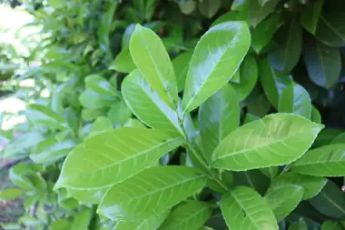
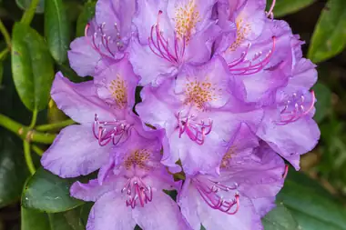
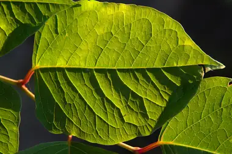
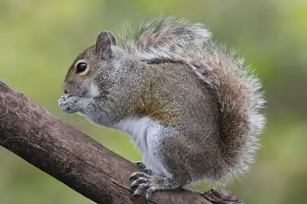
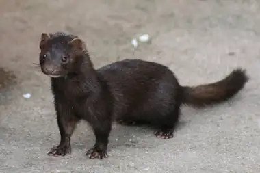
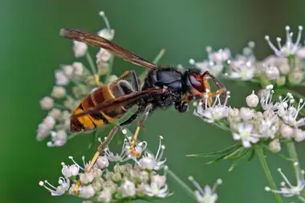
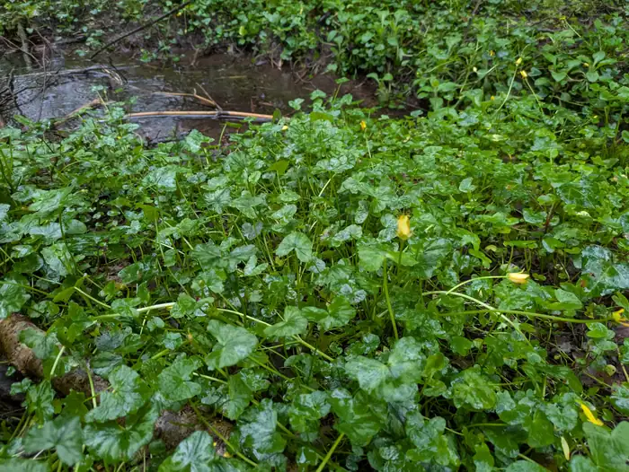
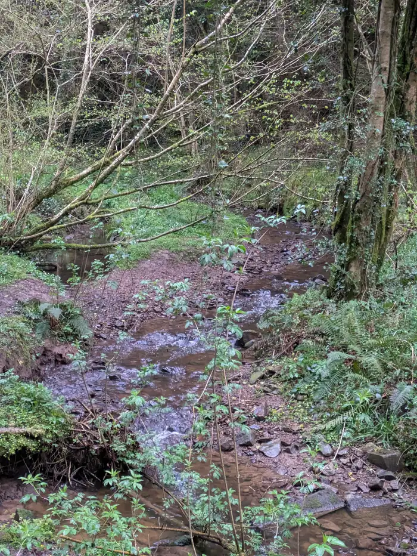
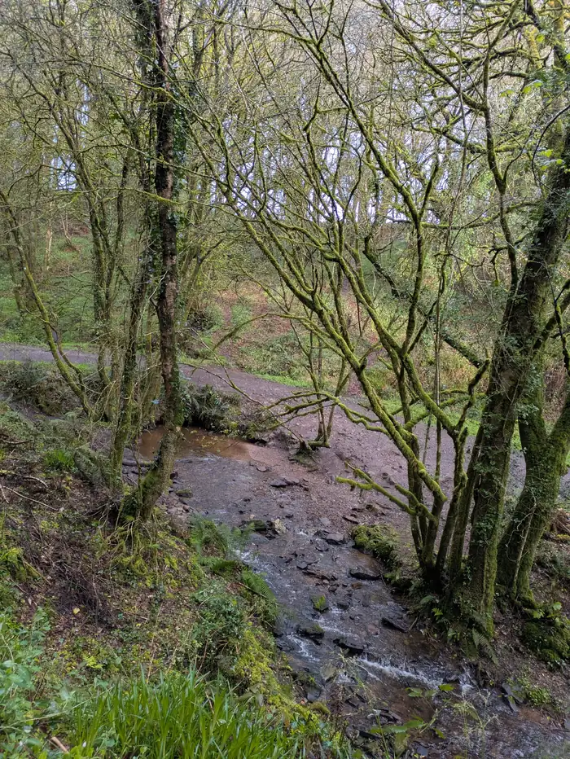
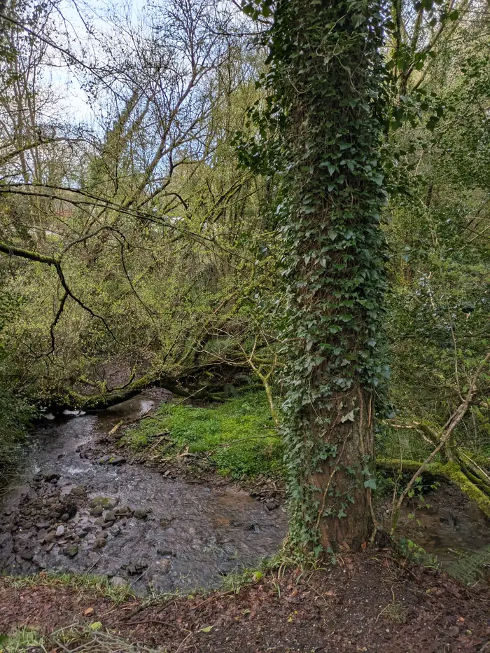

Strand 3 - Improving water and ecosystems
Invasive species,
and why they matter here.
An invasive species is one that arrived from elsewhere and spreads without the checks that held it in balance at home.
Plants to know
Descriptions after Invasive Species Ireland.
Plant


Cherry laurel
Evergreen, dense, and casts shade so deep that nothing grows beneath it. Spreads readily from garden plantings into woodland.
Plant


Rhododendron
Forms impenetrable thickets, prevents woodland regenerating, and is difficult and expensive to remove once established.
Plant


Japanese knotweed
Spreads from small fragments of root or stem. Cutting or moving soil makes it worse. Report it - do not attempt to clear it yourself.
Animals to know
Descriptions after Invasive Species Ireland.
Animal


Grey squirrel
Displaces the native red squirrel and strips bark from young broadleaf trees.
Animal


American mink
Predates ground-nesting birds and fish along watercourses.
Animal

.jpg){kind=link}
Asian hornet
A serious threat to honeybees and other pollinators. Any suspected sighting should be reported immediately.
1% Changes you can make
What to do
Check your own garden
Laurel and rhododendron spread into woodland from garden plantings.
Clean your boots between sites
Seeds and fragments travel in mud. A brush down at the car park is enough.
Record what you see
Records build the picture of what lives here.
What not to do
Do not cut or move Japanese knotweed
It spreads from fragments of root and stem, so cutting it or shifting the soil around it moves it rather than removes it. Report it and leave it where it is.
Do not dump garden waste in woodland
Garden plants arrive in woodland this way. Cuttings, roots and seed heads tipped over a wall or at the end of a track can establish where they land.
Do not move soil between sites
Seeds and fragments travel in soil as readily as in mud on a boot. Soil brought in from elsewhere brings whatever was living in it.
The water itself
Photographed inside the catchment on 4 and 11 April 2026. Each carries the elevation and time it was taken.




Where to record what you see
These are the bodies already listed on our links page.